Using Astropy Quantities for astrophysical calculations¶
In this tutorial we present some examples showing how astropy’s
Quantity object can make astrophysics calculations easier. The
examples include calculating the mass of a galaxy from its velocity
dispersion and determining masses of molecular clouds from CO intensity
maps. We end with an example of good practices for using quantities in
functions you might distribute to other people.
For an in-depth discussion of Quantity objects, see the astropy
documentation
section.
Preliminaries¶
We start by loading standard libraries and set up plotting for ipython notebooks.
In [1]:
import numpy as np
import matplotlib.pyplot as plt
# You shouldn't use the `seed` function in real science code, but we use it here for example purposes.
# It makes the "random" number generator always give the same numbers wherever you run it.
np.random.seed(12345)
# Set up matplotlib and use a nicer set of plot parameters
from astropy.visualization import astropy_mpl_style
import matplotlib.pyplot as plt
plt.style.use(astropy_mpl_style)
%matplotlib inline
It is conventional to load the astropy units module as the variable
u, demonstrated below. This will make working with Quantity
objects much easier.
Astropy also has a constants module, where typical physical
constants are available. The constants are stored as objects of a
subclass of Quantity, so they behave just like a Quantity. Here,
we’ll only need the gravitational constant G, Planck’s constant
h, and Boltzmann’s constant, k_B.
In [2]:
import astropy.units as u
from astropy.constants import G, h, k_B
1. Galaxy mass¶
In this first example, we will use Quantity objects to estimate a
hypothetical galaxy’s mass, given its half-light radius and radial
velocities of stars in the galaxy.
Lets assume that we measured the half light radius of the galaxy to be
29 pc projected on the sky at the distance of the galaxy. This radius is
often called the “effective radius”, so we will store it as a
Quantity object with the name Reff. The easiest way to create a
Quantity object is just by multiplying the value with its unit.
Units are accessed as u.”unit”, in this case u.pc.
In [3]:
Reff = 29 * u.pc
A completely equivalent (but more verbose) way of doing the same thing
is to use the Quantity object’s initializer, demonstrated below. In
general, the simpler form (above) is preferred, as it is closer to how
such a quantity would actually be written in text. The initalizer form
has more options, though, which you can learn about from the astropy
reference documentation on
Quantity.
In [4]:
Reff = u.Quantity(29, unit=u.pc)
We can access the value and unit of a Quantity using the value
and unit attributes.
In [5]:
print("""Half light radius
value: {0}
unit: {1}""".format(Reff.value, Reff.unit))
Half light radius
value: 29.0
unit: pc
The value and unit attributes can also be accessed within the
print function.
In [6]:
print("""Half light radius
value: {0.value}
unit: {0.unit}""".format(Reff))
Half light radius
value: 29.0
unit: pc
Furthermore, we can convert the radius in parsecs to any other unit of
length using the to() method. Here, we convert it to meters.
In [7]:
print("{0:.3g}".format(Reff.to(u.m)))
8.95e+17 m
Next, we will first create a synthetic dataset of radial velocity measurements, assuming a normal distribution with a mean velocity of 206 km/s and a velocity dispersion of 4.3 km/s.
In [8]:
vmean = 206
sigin = 4.3
v = np.random.normal(vmean, sigin, 500)*u.km/u.s
In [9]:
print("""First 10 radial velocity measurements:
{0}
{1}""".format(v[:10], v.to(u.m/u.s)[:10]))
First 10 radial velocity measurements:
[ 205.11975706 208.05945635 203.76641353 203.61035969 214.45285646
211.99164508 206.39950387 207.21150846 209.30679704 211.35966937] km / s
[ 205119.75706422 208059.45635365 203766.41352526 203610.35969131
214452.85646176 211991.64508178 206399.50387 207211.50845717
209306.79704073 211359.66936646] m / s
In [10]:
plt.figure()
plt.hist(v, bins='auto', histtype="step")
plt.xlabel("Velocity (km/s)")
plt.ylabel("N")
Out[10]:
<matplotlib.text.Text at 0x10d870908>

Next, we calculate the velocity dispersion of the galaxy. This
demonstrates how you can perform basic operations like subtraction and
division with Quantity objects, and also use them in standard numpy
functions such as mean() and size(). They retain their units
through these operations just as you would expect them to.
In [11]:
sigma = np.sqrt(np.sum((v - np.mean(v))**2) / np.size(v))
print("Velocity dispersion: {0:.2f}".format(sigma))
Velocity dispersion: 4.36 km / s
Note how we needed to use numpy square root function, because the
resulting velocity dispersion quantity is a numpy array. If we used
the python standard math library’s sqrt function instead, we get
an error.
In [12]:
sigma_scalar = np.sqrt(np.sum((v - np.mean(v))**2) / len(v))
In general, you should only use numpy functions with Quantity
objects, not the math equivalents, unless you are sure you
understand the consequences.
Now for the actual mass calculation. If a galaxy is pressure-supported
(for example, an elliptical or dwarf spheroidal galaxy), its mass within
the stellar extent can be estimated using a straightforward formula:
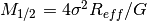. There are caveats to the use of
this formula for science - see Wolf et al. 2010 for details. For
demonstrating Quantity, just accept that this is often good enough.
For the calculation we can just multiply the quantities together, and
astropy will keep track of the units.
In [13]:
M = 4*sigma**2*Reff/G
M
Out[13]:

The result is in a composite unit, so it’s not really obvious it’s a mass. However, it can be decomposed to cancel all of the length units (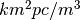) using the decompose() method.
In [14]:
M.decompose()
Out[14]:
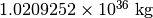
We can also easily express the mass in whatever form you like - solar masses are common in astronomy, or maybe you want the default SI and CGS units.
In [15]:
print("""Galaxy mass
in solar units: {0:.3g}
SI units: {1:.3g}
CGS units: {2:.3g}""".format(M.to(u.Msun), M.si, M.cgs))
Galaxy mass
in solar units: 5.13e+05 solMass
SI units: 1.02e+36 kg
CGS units: 1.02e+39 g
Or, if you want the log of the mass, you can just use np.log10 as
long as the logarithm’s argument is dimensionless.
In [16]:
np.log10(M / u.Msun)
Out[16]:

However, you can’t take the log of something with units, as that is not mathematically sensible.
In [17]:
np.log10(M)
---------------------------------------------------------------------------
UnitConversionError Traceback (most recent call last)
~/anaconda/envs/tutorials-dev/lib/python3.6/site-packages/astropy/units/quantity_helper.py in get_converter(from_unit, to_unit)
21 try:
---> 22 scale = from_unit._to(to_unit)
23 except UnitsError:
~/anaconda/envs/tutorials-dev/lib/python3.6/site-packages/astropy/units/core.py in _to(self, other)
943 raise UnitConversionError(
--> 944 "'{0!r}' is not a scaled version of '{1!r}'".format(self, other))
945
UnitConversionError: 'Unit("kg km2 pc / m3")' is not a scaled version of 'Unit(dimensionless)'
During handling of the above exception, another exception occurred:
UnitConversionError Traceback (most recent call last)
~/anaconda/envs/tutorials-dev/lib/python3.6/site-packages/astropy/units/quantity_helper.py in helper_dimensionless_to_dimensionless(f, unit)
107 try:
--> 108 return ([get_converter(unit, dimensionless_unscaled)],
109 dimensionless_unscaled)
~/anaconda/envs/tutorials-dev/lib/python3.6/site-packages/astropy/units/quantity_helper.py in get_converter(from_unit, to_unit)
24 return from_unit._apply_equivalencies(
---> 25 from_unit, to_unit, get_current_unit_registry().equivalencies)
26 except AttributeError:
~/anaconda/envs/tutorials-dev/lib/python3.6/site-packages/astropy/units/core.py in _apply_equivalencies(self, unit, other, equivalencies)
880 "{0} and {1} are not convertible".format(
--> 881 unit_str, other_str))
882
UnitConversionError: 'kg km2 pc / m3' (mass) and '' (dimensionless) are not convertible
During handling of the above exception, another exception occurred:
UnitTypeError Traceback (most recent call last)
<ipython-input-17-598955917a11> in <module>()
----> 1 np.log10(M)
~/anaconda/envs/tutorials-dev/lib/python3.6/site-packages/astropy/units/quantity.py in __array_ufunc__(self, function, method, *inputs, **kwargs)
619 # consistent units between two inputs (e.g., in np.add) --
620 # and the unit of the result (or tuple of units for nout > 1).
--> 621 converters, unit = converters_and_unit(function, method, *inputs)
622
623 out = kwargs.get('out', None)
~/anaconda/envs/tutorials-dev/lib/python3.6/site-packages/astropy/units/quantity_helper.py in converters_and_unit(function, method, *args)
459 # will have (this is a tuple of units if there are multiple outputs).
460 if function in UFUNC_HELPERS:
--> 461 converters, result_unit = UFUNC_HELPERS[function](function, *units)
462 else:
463 raise TypeError("Unknown ufunc {0}. Please raise issue on "
~/anaconda/envs/tutorials-dev/lib/python3.6/site-packages/astropy/units/quantity_helper.py in helper_dimensionless_to_dimensionless(f, unit)
111 raise UnitTypeError("Can only apply '{0}' function to "
112 "dimensionless quantities"
--> 113 .format(f.__name__))
114
115
UnitTypeError: Can only apply 'log10' function to dimensionless quantities
Exercises¶
Use Quantity and Kepler’s law in the form given below to determine
the (circular) orbital speed of the Earth around the sun in km/s. You
should not have to look up an constants or conversion factors to do this
calculation - it’s all in astropy.units and astropy.constants.

In [18]:
There’s a much easier way to figure out the velocity of the Earth using just two units or quantities. Do that and then compare to the Kepler’s law answer (the easiest way is probably to compute the percentage difference, if any).
In [18]:
(Completely optional, but a good way to convince yourself of the value of Quantity:) Do the above calculations by hand - you can use a calculator (or python just for its arithmatic) but look up all the appropriate conversion factors and use paper-and-pencil approaches for keeping track of them all. Which one took longer?
In [18]:
2. Molecular cloud mass¶
In this second example, we will demonstrate how using Quantity
objects can facilitate a full derivation of the total mass of a
molecular cloud using radio observations of isotopes of Carbon Monoxide
(CO).
Setting up the data cube¶
Let’s assume that we have mapped the inner part of a molecular cloud in
the J=1-0 rotational transition of  and are
interested in measuring its total mass. The measurement produced a data
cube with RA and Dec as spatial coordiates and velocity as the third
axis. Each voxel in this data cube represents the brightness temperature
of the emission at that position and velocity. Furthermore, we will
assume that we have an independent measurement of distance to the cloud
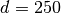 pc and that the excitation temperature is known and
constant throughout the cloud: 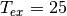 K.
and are
interested in measuring its total mass. The measurement produced a data
cube with RA and Dec as spatial coordiates and velocity as the third
axis. Each voxel in this data cube represents the brightness temperature
of the emission at that position and velocity. Furthermore, we will
assume that we have an independent measurement of distance to the cloud
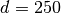 pc and that the excitation temperature is known and
constant throughout the cloud: 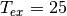 K.
In [18]:
d = 250 * u.pc
Tex = 25 * u.K
We will generate a synthetic dataset, assuming the cloud follows a
Gaussian distribution in each of RA, Dec and velocity. We start by
creating a 100x100x300 numpy array, such that the first coordinate is
right ascension, the second is declination, and the third is velocity.
We use the numpy.meshgrid function to create data cubes for each of
the three coordinates, and then use them in the formula for a Gaussian
to generate an array with the synthetic data cube. In this cube, the
cloud is positioned at the center of the cube, with  and
the center in each dimension shown below. Note in particular that the
for RA and Dec have different units from the center, but
and
the center in each dimension shown below. Note in particular that the
for RA and Dec have different units from the center, but
astropy automatically does the relevant conversions before computing
the exponential.
In [19]:
# Cloud's center
cen_ra = 52.25 * u.deg
cen_dec = 0.25 * u.deg
cen_v = 15 * u.km/u.s
# Cloud's size
sig_ra = 3 * u.arcmin
sig_dec = 4 * u.arcmin
sig_v = 3 * u.km/u.s
#1D coordinate quantities
ra = np.linspace(52, 52.5, 100) * u.deg
dec = np.linspace(0, 0.5, 100) * u.deg
v = np.linspace(0, 30, 300) *u.km/u.s
#this creates data cubes of size for each coordinate based on the dimensions of the other coordinates
ra_cube, dec_cube, v_cube = np.meshgrid(ra, dec, v)
data_gauss = np.exp(-0.5*((ra_cube-cen_ra)/sig_ra)**2 +
-0.5*((dec_cube-cen_dec)/sig_dec)**2 +
-0.5*((v_cube-cen_v)/sig_v)**2 )
The units of the exponential are dimensionless, so we multiply the data
cube by K to get brightness temperature units. Radio astronomers use a
rather odd set of units [K km/s] as of integrated intensity (that is,
summing all the emission from a line over velocity). As an aside for
experts, we’re setting up our artificial cube on the main-beam
temperature scale (T:math:_{rm MB}) which is the closest we can
normally get to the actual brightness temperature of our source.
In [20]:
data = data_gauss * u.K
We will also need to know the width of each velocity bin and the size of each pixel, so we calculate that now.
In [21]:
# Average pixel size
# This is only right if dec ~ 0, because of the cos(dec) factor.
dra = (ra.max() - ra.min()) / len(ra)
ddec = (dec.max() - dec.min()) / len(dec)
#Average velocity bin width
dv = (v.max() - v.min()) / len(v)
print("""dra = {0}
ddec = {1}
dv = {2}""".format(dra.to(u.arcsec), ddec.to(u.arcsec), dv))
dra = 18.0 arcsec
ddec = 18.0 arcsec
dv = 0.1 km / s
We are interested in the integrated intensity over all of the velocity channels, so we will create a 2D quantity array by summing our data cube along the velocity axis (multiplying by the velocity width of a pixel).
In [22]:
intcloud = np.sum(data*dv, axis=2)
intcloud.unit
Out[22]:

We can plot the 2D quantity using matplotlib’s imshow function, by
passing the quantity’s value. Similarly, we can set the correct extent
using the values of  and
and  . Finally, we can set the
colorbar label to have proper units.
. Finally, we can set the
colorbar label to have proper units.
In [23]:
#Note that we display RA in the convential way by going from max to min
plt.imshow(intcloud.value,
origin='lower',
extent=[ra.value.max(), ra.value.min(), dec.value.min(), dec.value.max()],
cmap='hot',
interpolation='nearest',
aspect='equal')
plt.colorbar().set_label("Intensity ({})".format(intcloud.unit))
plt.xlabel("RA (deg)")
plt.ylabel("Dec (deg)");

Measuring The Column Density of CO¶
In order to calculate the mass of the molecular cloud, we need to
measure its column density. A number of assumptions are required for the
following calculation; the most important are that the emission is
optically thin (typically true for ) and that
conditions of local thermodynamic equilibrium hold along the line of
sight. In the case where the temperature is large compared to the
separation in energy levels for a molecule and the source fills the main
beam of the telescope, the total column density for
is
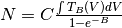
where the constants  and
and  are given by:
are given by:
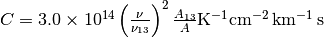

(Rohlfs & Wilson “Tools of Radio Astronomy”).
Here we have given an expression for scaled to the values for
( and
and  ). In
order to use this relation for , we need to
rescale the frequencies
). In
order to use this relation for , we need to
rescale the frequencies  and Einstein coefficients
and Einstein coefficients
 . is in funny mixed units, but that’s okay. We’ll
define it as a
. is in funny mixed units, but that’s okay. We’ll
define it as a Quantities object and not have to worry about it.
First, we look up the wavelength for these emission lines and store them as quantities.
In [24]:
lambda13 = 2.60076 * u.mm
lambda18 = 2.73079 * u.mm
Since the wavelength and frequency of light are related using the speed of light, we can convert between them. However, doing so just using the to() method fails, as units of length and frequency are not convertible:
In [25]:
nu13 = lambda13.to(u.Hz)
---------------------------------------------------------------------------
UnitConversionError Traceback (most recent call last)
<ipython-input-25-b4a9b54d7f21> in <module>()
----> 1 nu13 = lambda13.to(u.Hz)
~/anaconda/envs/tutorials-dev/lib/python3.6/site-packages/astropy/units/quantity.py in to(self, unit, equivalencies)
842 # and don't want to slow down this method (esp. the scalar case).
843 unit = Unit(unit)
--> 844 return self._new_view(self._to_value(unit, equivalencies), unit)
845
846 def to_value(self, unit=None, equivalencies=[]):
~/anaconda/envs/tutorials-dev/lib/python3.6/site-packages/astropy/units/quantity.py in _to_value(self, unit, equivalencies)
814 equivalencies = self._equivalencies
815 return self.unit.to(unit, self.view(np.ndarray),
--> 816 equivalencies=equivalencies)
817
818 def to(self, unit, equivalencies=[]):
~/anaconda/envs/tutorials-dev/lib/python3.6/site-packages/astropy/units/core.py in to(self, other, value, equivalencies)
975 If units are inconsistent
976 """
--> 977 return self._get_converter(other, equivalencies=equivalencies)(value)
978
979 def in_units(self, other, value=1.0, equivalencies=[]):
~/anaconda/envs/tutorials-dev/lib/python3.6/site-packages/astropy/units/core.py in _get_converter(self, other, equivalencies)
909 pass
910
--> 911 raise exc
912
913 def _to(self, other):
~/anaconda/envs/tutorials-dev/lib/python3.6/site-packages/astropy/units/core.py in _get_converter(self, other, equivalencies)
895 try:
896 return self._apply_equivalencies(
--> 897 self, other, self._normalize_equivalencies(equivalencies))
898 except UnitsError as exc:
899 # Last hope: maybe other knows how to do it?
~/anaconda/envs/tutorials-dev/lib/python3.6/site-packages/astropy/units/core.py in _apply_equivalencies(self, unit, other, equivalencies)
879 raise UnitConversionError(
880 "{0} and {1} are not convertible".format(
--> 881 unit_str, other_str))
882
883 def _get_converter(self, other, equivalencies=[]):
UnitConversionError: 'mm' (length) and 'Hz' (frequency) are not convertible
Fortunately, astropy comes to the rescue by providing a feature
called “unit equivalencies”. Equivalencies provide a way to convert
between two physically different units that are not normally equivalent,
but in a certain context have a one-to-one mapping. For more on
equivalencies, see the equivalencies section of astropy’s
documentation.
In this case, calling the astropy.units.spectral() function provides
the equivalencies necessary to handle conversions between wavelength and
frequency. To use it, provide the equivalencies to the equivalencies
keyword of the to() call:
In [26]:
nu13 = lambda13.to(u.Hz, equivalencies=u.spectral())
nu18 = lambda18.to(u.Hz, equivalencies=u.spectral())
Next, we look up Einstein coefficients (in units of s ),
and calculate the ratios in constant . Note how the ratios of
frequency and Einstein coefficient units are dimensionless, so the unit
of is unchanged.
),
and calculate the ratios in constant . Note how the ratios of
frequency and Einstein coefficient units are dimensionless, so the unit
of is unchanged.
In [27]:
A13 = 7.4e-8 / u.s
A18 = 8.8e-8 / u.s
C = 3e14 * (nu18/nu13)**3 * (A13/A18) / (u.K * u.cm**2 * u.km *(1/u.s))
C
Out[27]:
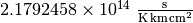
Now we move on to calculate the constant . This is given by the
ratio of 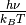, where  is Planck’s
constant,
is Planck’s
constant,  is the Boltzmann’s constant,
is the Boltzmann’s constant,  is the
emission frequency, and
is the
emission frequency, and  is the excitation temperature. The
constants were imported from
is the excitation temperature. The
constants were imported from astropy.constants, and the other two
values are already calculated, so here we just take the ratio.
In [28]:
B = h * nu18 / (k_B * Tex)
The units of are Hz s, which can be decomposed to a
dimensionless unit if you actually care about it’s value. Usually this
is not necessary, though. Quantities are at their best if you just use
them without worrying about intermediate units, and only convert at the
very end when you want a final answer.
In [29]:
print('{0}\n{1}'.format(B, B.decompose()))
0.21074888275227613 Hz s
0.21074888275227613
At this point we have all the ingredients to calculate the number density of molecules in this cloud. We already integrated (summed) over the velocity channels above to show the integrated intensity map, but we’ll do it again here for clarity. This gives us the column density of CO for each spatial pixel in our map. We can then print out the peak column column density.
In [30]:
NCO = C * np.sum(data*dv, axis=2) / (1 - np.exp(-B))
print("Peak CO column density: ")
np.max(NCO)
Peak CO column density:
Out[30]:
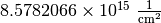
CO to Total Mass¶
We are using CO as a tracer for the much more numerous H ,
the quantity we are actually trying to infer. Since most of the mass is
in H, we calculate its column density by multiplying the CO
column density with the (known/assumed) H/CO ratio.
,
the quantity we are actually trying to infer. Since most of the mass is
in H, we calculate its column density by multiplying the CO
column density with the (known/assumed) H/CO ratio.
In [31]:
H2_CO_ratio = 5.9e6
NH2 = NCO * H2_CO_ratio
print("Peak H2 column density: ")
np.max(NH2)
Peak H2 column density:
Out[31]:

That’s a peak column density of roughly 50 magnitudes of visual
extinction (assuming the conversion between N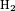 and
A from Bohlin et al. 1978), which seems reasonable for a
molecular cloud.
from Bohlin et al. 1978), which seems reasonable for a
molecular cloud.
We obtain the mass column density by multiplying the number column
density by the mass of an individual H molecule.
In [32]:
mH2 = 2 * 1.008 * u.Dalton #aka atomic mass unit/amu
rho = NH2 * mH2
A final step in going from the column density to mass is summing up over the area area. If we do this in the straightforward way of length x width of a pixel, this area is then in units of 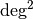.
In [33]:
dap = dra * ddec
print(dap)
2.5e-05 deg2
Now comes an important subtlety: in the small angle approximation, multiplying the pixel area with the square of distance yields the cross-sectional area of the cloud that the pixel covers, in physical units, rather than angular units. So it is tempting to just multiply the area and the square of the distance.
In [34]:
da = dap * d**2 # don't actually do it this way - use the version below instead!
print(da)
1.5625 deg2 pc2
In [35]:
dap.to(u.steradian).value * d**2
Out[35]:
But this is wrong, because astropy.units treats angles (and
solid angles) as actual physical units, while the small-angle
approximation assumes angles are dimensionless. So if you, e.g., try to
convert to a different area unit, it will fail:
In [36]:
da.to(u.cm**2)
---------------------------------------------------------------------------
UnitConversionError Traceback (most recent call last)
<ipython-input-36-d7c4d4dcf9cc> in <module>()
----> 1 da.to(u.cm**2)
~/anaconda/envs/tutorials-dev/lib/python3.6/site-packages/astropy/units/quantity.py in to(self, unit, equivalencies)
842 # and don't want to slow down this method (esp. the scalar case).
843 unit = Unit(unit)
--> 844 return self._new_view(self._to_value(unit, equivalencies), unit)
845
846 def to_value(self, unit=None, equivalencies=[]):
~/anaconda/envs/tutorials-dev/lib/python3.6/site-packages/astropy/units/quantity.py in _to_value(self, unit, equivalencies)
814 equivalencies = self._equivalencies
815 return self.unit.to(unit, self.view(np.ndarray),
--> 816 equivalencies=equivalencies)
817
818 def to(self, unit, equivalencies=[]):
~/anaconda/envs/tutorials-dev/lib/python3.6/site-packages/astropy/units/core.py in to(self, other, value, equivalencies)
975 If units are inconsistent
976 """
--> 977 return self._get_converter(other, equivalencies=equivalencies)(value)
978
979 def in_units(self, other, value=1.0, equivalencies=[]):
~/anaconda/envs/tutorials-dev/lib/python3.6/site-packages/astropy/units/core.py in _get_converter(self, other, equivalencies)
909 pass
910
--> 911 raise exc
912
913 def _to(self, other):
~/anaconda/envs/tutorials-dev/lib/python3.6/site-packages/astropy/units/core.py in _get_converter(self, other, equivalencies)
895 try:
896 return self._apply_equivalencies(
--> 897 self, other, self._normalize_equivalencies(equivalencies))
898 except UnitsError as exc:
899 # Last hope: maybe other knows how to do it?
~/anaconda/envs/tutorials-dev/lib/python3.6/site-packages/astropy/units/core.py in _apply_equivalencies(self, unit, other, equivalencies)
879 raise UnitConversionError(
880 "{0} and {1} are not convertible".format(
--> 881 unit_str, other_str))
882
883 def _get_converter(self, other, equivalencies=[]):
UnitConversionError: 'deg2 pc2' and 'cm2' (area) are not convertible
The solution is to use the dimensionless_angles equivalency, which
allows angles to be treated as dimensionless. This makes it so that they
will automatically convert to radians and become dimensionless when a
conversion is needed.
In [37]:
da = (dap * d**2).to(u.pc**2, equivalencies=u.dimensionless_angles())
da
Out[37]:
In [38]:
da.to(u.cm**2)
Out[38]:

Finally, multiplying the column density with the pixel area and summing over all the pixels gives us the cloud mass.
In [39]:
M = np.sum(rho * da)
M.decompose().to(u.solMass)
Out[39]:
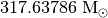
Exercises¶
The astro material was pretty heavy on that one, so lets focus on some
associated statistics using Quantity’s array capabililities. Compute
the median and mean of the data with the np.mean and
np.median functions. Why are their values so different?
In [40]:
Similarly, compute the standard deviation and variance (if you don’t know the relevant functions, look it up in the numpy docs or just type np. and a code cell). Do they have the units you expect?
In [40]:
3. Using Quantities with Functions¶
Quantity is also a useful tool if you plan to share some of your
code, either with collaborators or the wider community. By writing
functions that take Quantity objects instead of raw numbers or
arrays, you can write code that is agnostic to the input unit. In this
way, you may even be able to prevent the destruction of Mars
orbiters.
Below, we provide a simple example.
Suppose you are working on an instrument, and the bigwig funding it asks for a function to give an analytic estimate of the response function. You determine from some tests it’s basically a Lorentzian, but with a different scale along the two axes. Your first thought might be to do this:
In [40]:
def response_func(xinarcsec, yinarcsec):
xscale = 0.9
yscale = 0.85
xfactor = 1 / (1 + xinarcsec/xscale)
yfactor = 1 / (1 + yinarcsec/yscale)
return xfactor * yfactor
You meant the inputs to be in arcsec, but you send that to your hapless collaborator, and they don’t look closely and think the inputs are instead supposed to be in arcmin. So they do:
In [41]:
response_func(1.0, 1.2)
Out[41]:
0.19640564826700893
And now they tell all their friends how terrible the instrument is,
because it’s supposed to have arcsecond resolution, but your function
clearly shows it can only resolve an arcmin at best. But you can solve
this by requiring they pass in Quantity objects. The new function
could simply be:
In [42]:
def response_func(x, y):
xscale = 0.9 * u.arcsec
yscale = 0.85 * u.arcsec
xfactor = 1 / (1 + x/xscale)
yfactor = 1 / (1 + y/yscale)
return xfactor * yfactor
And your collaborator now has to pay attention. If they just blindly put in a number they get an error:
In [43]:
response_func(1.0, 1.2)
---------------------------------------------------------------------------
UnitsError Traceback (most recent call last)
<ipython-input-43-5d7d1ca80126> in <module>()
----> 1 response_func(1.0, 1.2)
<ipython-input-42-c1a22f103934> in response_func(x, y)
2 xscale = 0.9 * u.arcsec
3 yscale = 0.85 * u.arcsec
----> 4 xfactor = 1 / (1 + x/xscale)
5 yfactor = 1 / (1 + y/yscale)
6
~/anaconda/envs/tutorials-dev/lib/python3.6/site-packages/astropy/units/quantity.py in __array_ufunc__(self, function, method, *inputs, **kwargs)
619 # consistent units between two inputs (e.g., in np.add) --
620 # and the unit of the result (or tuple of units for nout > 1).
--> 621 converters, unit = converters_and_unit(function, method, *inputs)
622
623 out = kwargs.get('out', None)
~/anaconda/envs/tutorials-dev/lib/python3.6/site-packages/astropy/units/quantity_helper.py in converters_and_unit(function, method, *args)
481 "argument is not a quantity (unless the "
482 "latter is all zero/infinity/nan)"
--> 483 .format(function.__name__))
484 except TypeError:
485 # _can_have_arbitrary_unit failed: arg could not be compared
UnitsError: Can only apply 'add' function to dimensionless quantities when other argument is not a quantity (unless the latter is all zero/infinity/nan)
Which is their cue to provide the units explicitly:
In [44]:
response_func(1.0*u.arcmin, 1.2*u.arcmin)
Out[44]:

The funding agency is impressed at the resolution you achieved, and your
instrument is saved. You now go on to win the Nobel Prize due to
discoveries the instrument makes. And it was all because you used
Quantity as the input of code you shared.
Exercise¶
Write a function that computes the Keplerian velocity you worked out in
section 1 (using Quantity input and outputs, of course), but
allowing for an arbitrary mass and orbital radius. Try it with some
reasonable numbers for satellites orbiting the Earth, a moon of Jupiter,
or an extrasolar planet. Feel free to use wikipedia or similar for the
masses and distances.
In [45]: